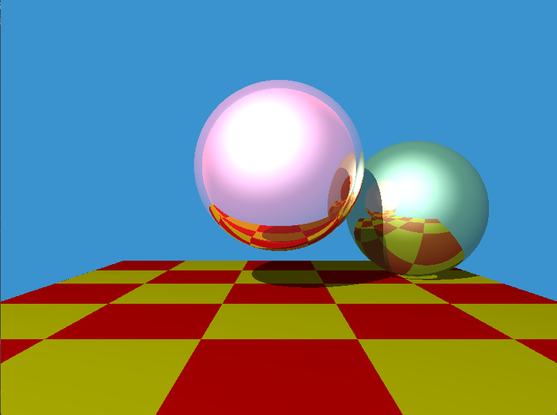
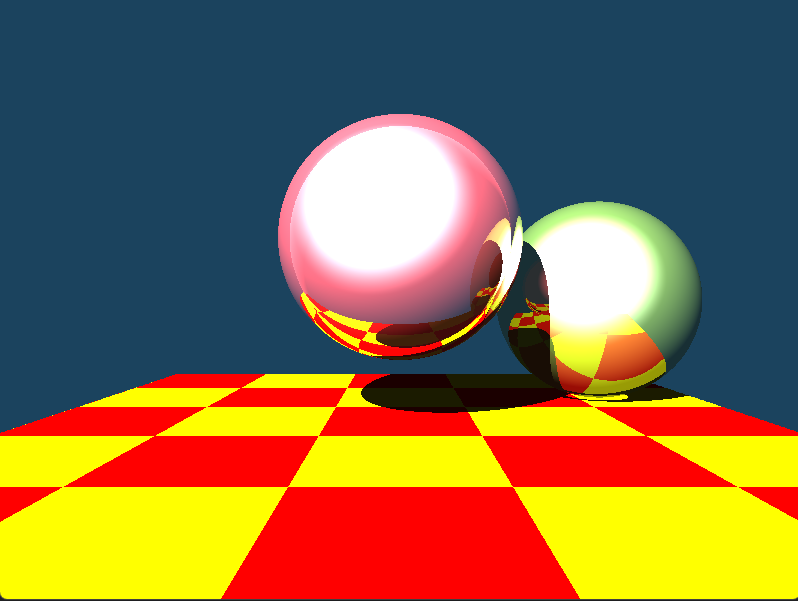
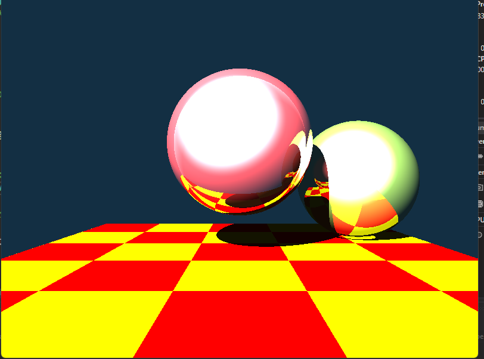
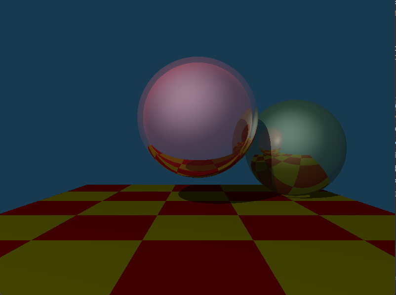
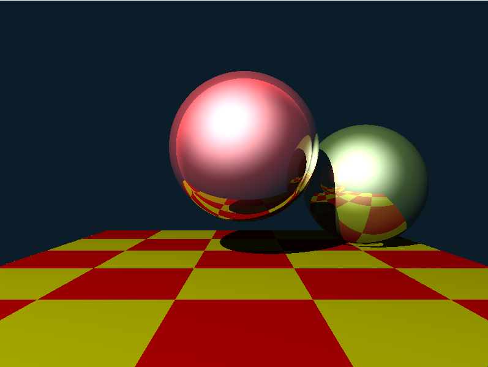
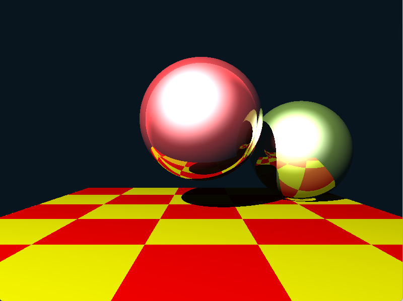

Low dynamic range (Light source 100, amibent source 20)
Mid dynamic range (Light source 700, amibent source 20)
High dynamic range (Light source 1500, amibent source 20)
Low dynamic range (Light source 100, amibent source 20)
Low dynamic range (Light source 700, amibent source 20)
Low dynamic range (Light source 1500, amibent source 20)
